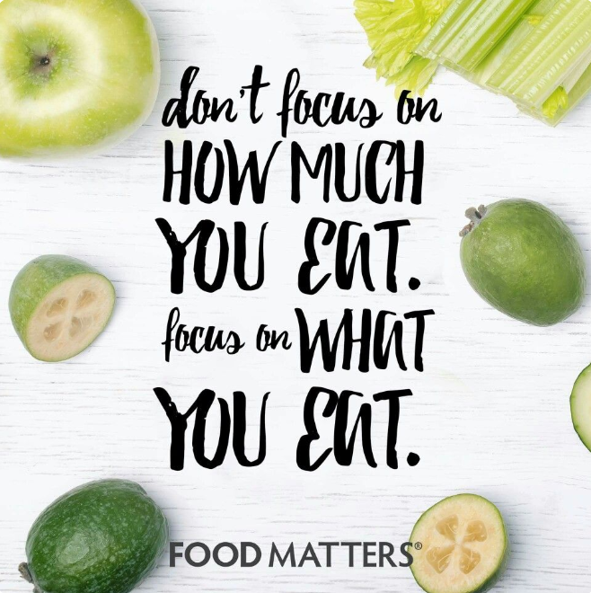

Good nutrition is the foundation of a healthy lifestyle. It fuels the body, supports mental well-being, and helps prevent chronic diseases. A balanced diet rich in whole foods, including fruits, vegetables, lean proteins, and whole grains, ensures that the body gets essential vitamins and minerals for optimal function. Hydration also plays a crucial role in maintaining energy levels and supporting digestion.
Nutrition & Healthy Eating: The Key to a Vibrant Life

Making mindful food choices and avoiding excessive processed foods can lead to long-term health benefits and overall well-being. Instead of focusing on how much you eat, focus on what you eat. Choosing nutrient-dense foods helps in maintaining energy levels and improving overall health.
By incorporating healthy eating habits into your daily routine, you can improve your quality of life and reduce the risk of various health issues. A diet rich in whole foods provides essential nutrients that support both physical and mental well-being, helping you feel energized and stay healthy in the long run.